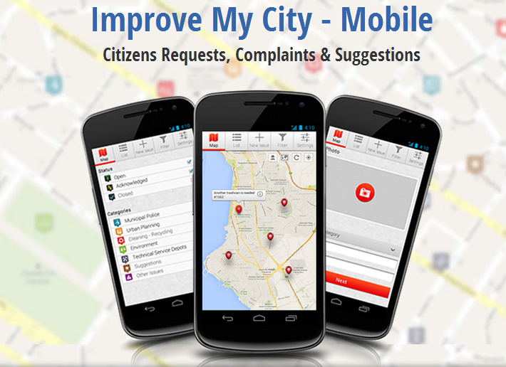

The Android mobile version of the web-based ImproveMyCity application
An open source smartphone application that allows citizens to report, vote and track non-emergency issues through their mobile phone

ImproveMyCityMobile is an open source smartphone application for Android devices that allows citizens to report all types of issues related to their neighborhood. The mobile application complements (and is fully interconnected with) the ImproveMyCity web application for reporting issues from web terminals. The android application fully resembles the functionality of the web version, with the additional features of: a) automatic extraction of the problem’s location through the GPS sensor, b) easy capturing a photo of the problem through the phone’s camera, c) storing the data locally to the phone for offline use, and d) downloading only the issues around the phone’s current position.
The application enables citizens to report local problems such as potholes, illegal trash dumping, faulty street lights, broken tiles on sidewalks, and illegal advertising boards. The submitted issues are displayed on the city's map. Users may add photos and comments. Moreover, they can suggest solutions for improving the environment of their neighbourhood.
Through the application local government agencies enable citizens and local actors to take action to improve their neighborhood. Reported cases then go directly into the city’s work order queue for resolution, and users are informed how quickly the case will be closed. When cases are resolved the date and time of the resolution is listed, providing users with the sense that the city is on the job.
The web based application has been developed within the European Project PEOPLE, in close cooperation with URENIO Research Unit, the Municipality of Thermi and user groups. It is therefore a truly user-centered digital application, adapted to the needs Municipalities and local communities. The Android mobile version is developed by the Information Technologies Institute.
For running the mobile application:
For modifying the source code: The code has been generated with Eclipse using android developer tool (ADT) and Android SDK. Be sure that you have already installed them in your machine.
The mobile application is developed to communicate with the back-end Joomla component of ImproveMyCity web application, so in order to access the full functionality you need also to follow the instructions for installing ImproveMyCity
A running version of ImproveMyCity-Mobile is already in full operation for the Municipality of Thermi – Greece, which can be downloaded from GooglePlay